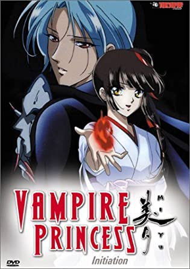

Vampire Princess Miyu
Anime opowiada o wampirzycy Miyu, która została wybrana, aby strzec ludzi przez zbłąkanymi demonami – Shinma.
U jej boku stoją zawsze lojalny, zbiegły Shinma Larva (lub Lava). Czasami także może liczyć na Reihę –
władającą wiatrem oraz zimnem (a dokładniej lodem) i Shinę, zbiegłego shinmę pod postacią małego króliczka. W serii OVA
(składającej się z czterech odcinków) Miyu jest ścigana przez egzorcystkę, która chce jej przeszkodzić, bo nie zna jej prawdziwej misji.
Seria TV składa się z 26 odcinków. Opowiada o losach Strażniczki Miyu w nowym mieście i tajemnicy związanej z jedną z jej przyjaciółek.
W serii pojawia się kilka nowych postaci – obok Lavy, Shiny, Reihy i Matsukaze występują trzy koleżanki Miyu:
Chisato, Yukari i Hisae. Dowiadujemy się również więcej o przeszłości głównych bohaterów.
